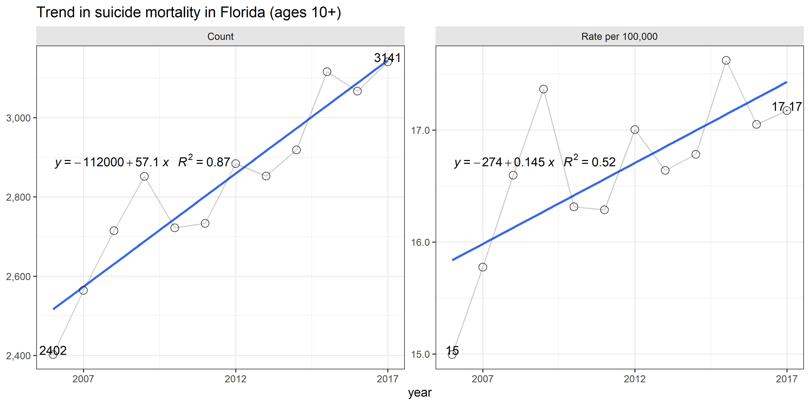
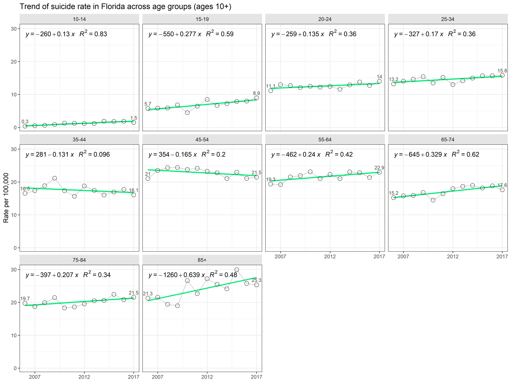
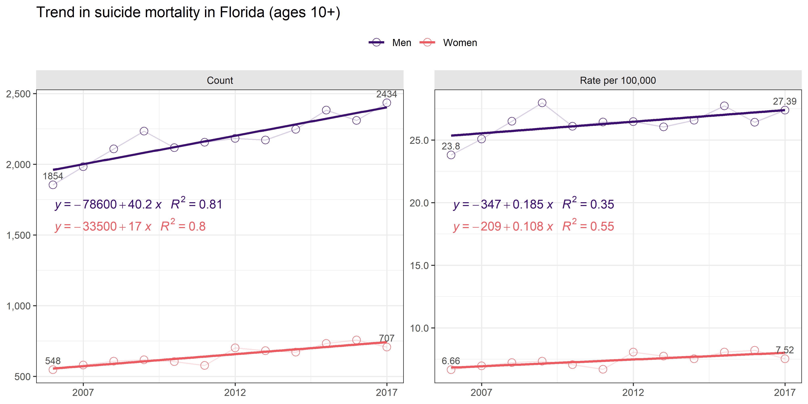
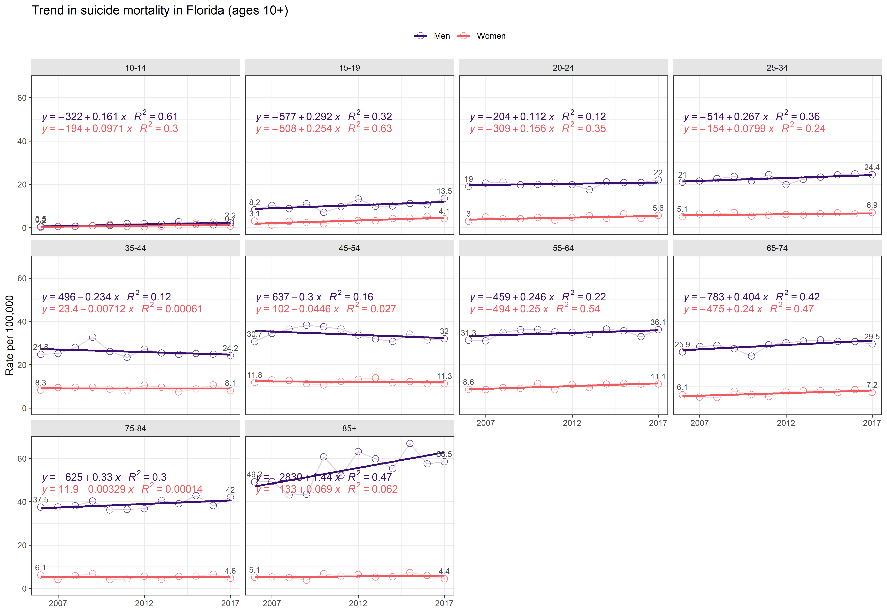
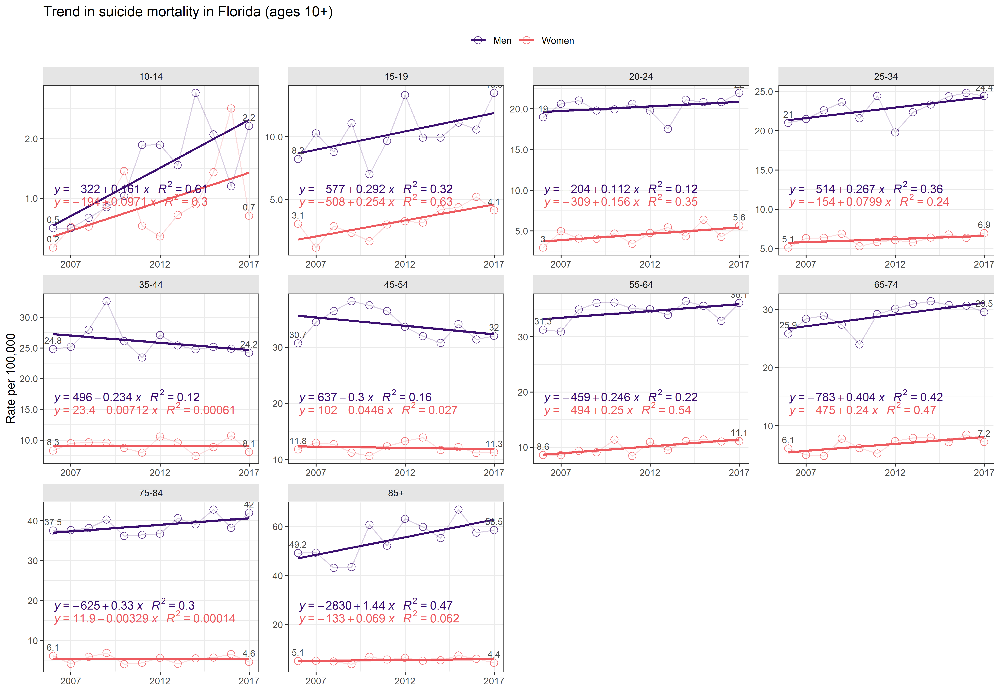
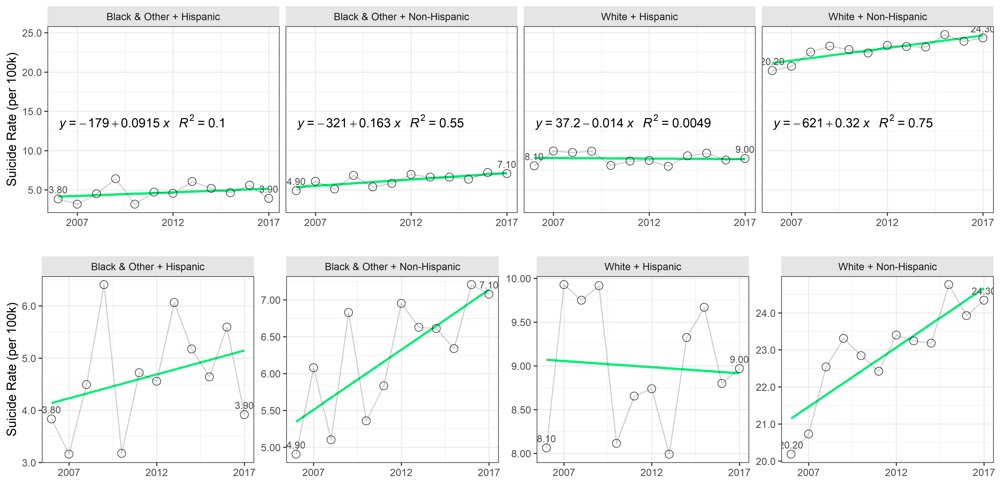
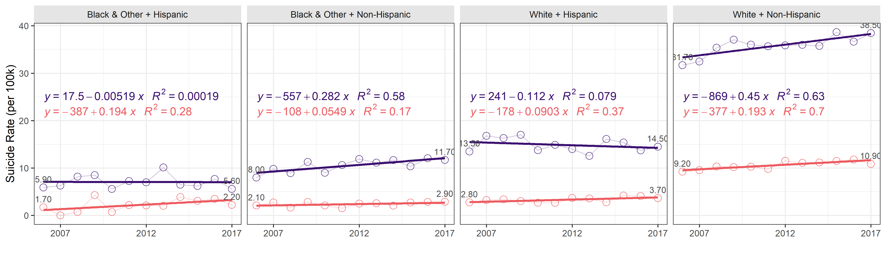
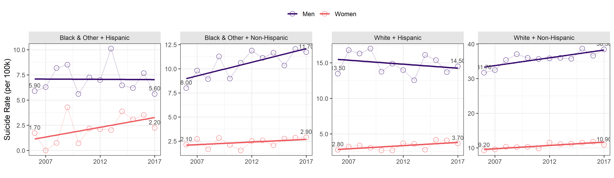

- Data
- Q1 - What is the overall trajectory of suicides in FL between 2006 and 2017?
- Q2 - How does change in suicide rates differ by AGE group?
- Q3 - How do suicide trends differ by SEX?
- Q4 - How do suicide trends differ by SEX and AGE group?
- Q5 - How do suicide trends differ by RACE?
- Q6 - How do suicide trends differ by RACE and SEX?
This blogpost graphs the trends of suicides in Florida from 2006 to 2017, exploring the differences in age, sex, and race among persons 10 years and older.
Click HERE to view report in its native environment of the suicide-prevention-2019 repository.
Data
The initial extract of the data was obtained from www.flhealthcharts.com, a reporting tool for population counts estimated by the Florida Department of Health. The dataset contains suicide mortality counts and population estimates for years 2006-2017, broken down by suicide means, county, sex, age group, and race. The .csv of this dataset is available for download. For details regarding data preparation, please consult the suicide-prevention-2019 repository.
Q1 - What is the overall trajectory of suicides in FL between 2006 and 2017?
Similar to national trends, the rates of suicide in Florida has been on the rise since 2006. In 2006, the Department of Health registered 2,402 suicides, while in 2017 this number reached 3,141. On average, each year the total number of suicides in Florida increased by 57 during this time. While the rising number of suicides events could be partially explained by demographic growth (see full report for details ), when adjusted for population size the rate per 100,000 still indicated that suicides became more prevalent: the rate increased from 15 in 2006 to 17.2 per 100,000 in 2017, averaging .15 in annual growth.

Q2 - How does change in suicide rates differ by AGE group?
Only two age groups, 35-44 and 45-54 exhibited decline in suicide rates, witnessed by a negative slope coefficient in the liniear model, regressing the rate on year. However, examination of the raw data point behind the linear model suggests that negative slope might be coincidental to an overal steady treajectory.
For all other age groups, the rates of suicides increased. The highest increase in suicide rates per 100,000 is observed in the 85+ group, for which the rate rose by .64 annualy from 21.3 suicides per 100,000 in 2006 to 25.3 in 2017.

Q3 - How do suicide trends differ by SEX?
As expected, suicides are more more prevalent among men. Notably, the increase for men was steeper: from 2006 to 2017 the rate of suicides for men rose from 23.8 to 27.4 per 100,000, averaging .19 per year, wheras for women this increase was smaller, rising from 6.7 to 7.5, over the same time period, averaging .11 per year.

Q4 - How do suicide trends differ by SEX and AGE group?
The top view helps comparing the overal level of suicide rates among age groups, accounting for sex differences. We see that the highest rates are among the oldest Floridians: 75-84 and 85+ groups, the latter exhibiting the fastest growth rate of 1.44 per year, rising by almost 20% from 49.2 per 100,000 in 2006 to 58.5 in 2017.

To better view the trends withing the age groups, we replot this figure with free y-axis, exposing more nuanced longitudinal trends.

Q5 - How do suicide trends differ by RACE?
White Non-Hispanics exhibit the highest suicide rate and also the steepest growth of .32 suicides per 100,000 per year. The top row of the graph places the trends on the same scale, while the bottom row displays them on individual scale. Note, however, that annual fluctuations are less meaningful for less populous ethnic groups, such as Black & Other + Hispanic

Q6 - How do suicide trends differ by RACE and SEX?
Regardless of the ethnic group, suicide is more prevalent among men, particularly of the White + Non-Hispanic origin. Notably, white non-hispanic women are more likely to commit suicide than women of any other ethnic group.

Replotting with free y-axis helps us see that growth in suicide rate among men is not universal across ethnic groups. Suicide rate is actually decreasing among non-white men with Hispanic origin. 